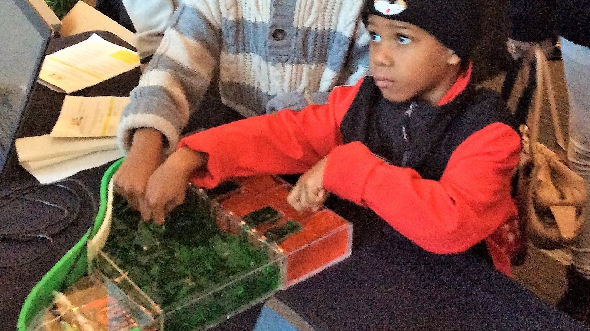

Based off the Jeltone, designed by Astrida Valigorsky, Ranjit Bhatnagar, Mimi Hui, and Catarina Mota, our Jello Piano is a partially edible toy piano with keys made of jello. Our many iterations of this instrument have pushed it to a new level of technical sophistication and perfection. The Jello Piano is a perfect example of design, manufacturing, and aesthetic working together to create the perfect sensory combination to excite children about making, engineering, and music!
A RAPID PROTOTYPING MASTERPIECE

THE SCIENCE BEHIND
Jello is water-based, so it conducts electricity. Each key of jello is connected to an Arduino pin with a copper wire and copper strip. The jello on the tail of the piano is connected to two wires which lead to the left and right channels of the speaker via its audio jack. The Arduino ground is connected to the speaker's ground. When you touch the jello on the tail of the piano and one of the keys, your body completes the electrical circuit, and we hear a tone as a result of the circuit being completed.
TESTIMONIALS
The jello piano activity allowed our students to experience two learning concepts: conductivity of electricity, and the sounding of musical patterns.
Students explored how electric currents are responsible for the production of sound by observing and handling the components of the jello piano board: the computer connected to the wires, the spoon attached to a wire, the jello keys on top of the wires, and all of that connected to the speakers.
Students were able to experience the process by handling the spoon and placing it, and their fingers on the other hand, on the keys of their choice and observing what happens. They either played random jello keys, or they played a scale pattern, and even short songs such as Hot Cross Buns. All students were fascinated by the electric sound, the idea of making their own sound patterns, and the idea of an electric current making the whole process possible.
The jello piano was presented to 7 classes of Kindergarten and 1st grade students.
- Natia Esartia & Yvonne Miller, Dunwoody Elementary School (GA)